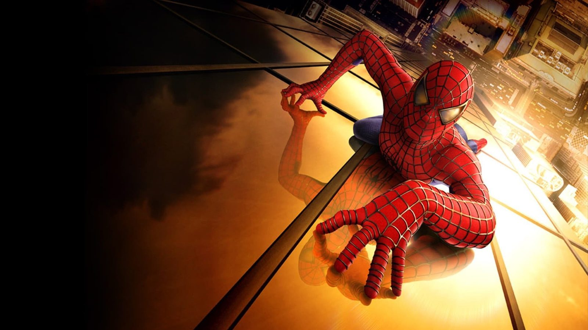

01 / 04 2002 TERRA-616BCAPÍTULO 01
O nascimento de um herói
Uma picada muda a vida de Peter Parker. Quando uma escolha impulsiva termina em tragédia, a morte do tio Ben transforma poder em responsabilidade — e dá início ao caminho do Homem-Aranha.
NO FILME
Homem-Aranha
EXPLORAR FILME